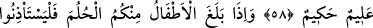

ÇOCUKLAR DA
YATAK ODASINA
İZİNSİZ GİREMEZ
58. Ey îman edenler! Ellerinizin altında bulunan (köle ve câriyeleriniz) ve
içinizden henüz ergenlik çağına girmemiş olanlar, sabah namazından önce, öğleyin
soyunduğunuz vakit ve yatsı namazından sonra (yanınıza gireceklerinde) sizden üç
defa izin istesinler. Bunlar, mahrem (kapanmamış) halde bulunabileceğiniz üç
vakittir. Bu vakitlerin dışında ne sizin için ne de onlar için bir mahzur yoktur.
Birbirinizin yanına girip çıkabilirsiniz. İşte Allah âyetleri size böyle açıklar. Allah,
(her şeyi) bilendir, hüküm ve hikmet sâhibidir.
59. Çocuklarınız ergenlik çağına girdiklerinde, kendilerinden öncekiler
(büyükleri) izin istedikleri gibi onlar da izin istesinler. İşte Allah, âyetlerini size
böyle açıklar. Allah alîmdir, hakîmdir.
60. Bir nikâh ümidi beslemeyen, çocuktan kesilmiş yaşlı kadınların, zinetleri
(yabancı erkeklere) teşhir etmeksizin (bazı) elbiselerini çıkarmalarında kendilerine
bir vebal yoktur. İffetli davranmaları kendileri için daha hayırlıdır. Allah işitendir,
bilendir.
Rivâyet olunduğuna göre Ebû Mersed’in kızı Esma’ya âid bir çocuk, hoşlanmadığı
uygunsuz bir vakitte yanına girmiş ve bunun üzerine şu âyet nâzil olmuştur.